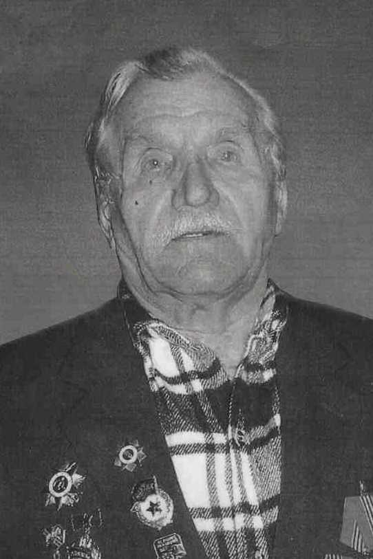

Пичугин Антон Андреевич
Дата рождения18.01.1926
Место рожденияКрасноярский край, Балахтинский р-н; Красноярский край, Балахтинский район, с. Пащенко
Место призываКагановичский РВК, Красноярский край, г. Красноярск, Кагановичский р-н
Место службы5 гвардейский механизированный корпус; 37 учебный стрелковый полк 27 учебной стрелковой дивизии; Кагановичский РВК
Воинское званиеефрейтор; сержант
НаградыОрден Отечественной войны II степени
Судьба11.04.2009.
Дата выбытия/гибели: 11.04.2009
Дата выбытия/гибели: 11.04.2009
ИсторияЕфрейтор, 18.01.1926, Красноярский край, Балахтинский р-н, Место службы: Кагановичский РВК, Красноярский край, г. Красноярск, Кагановичский р-н
ID 96962729
1926, Красноярский край, Балахтинский р-н, с. Пащенко. Юбилейная картотека
ID 1519994813
Гв. сержант, 01.1926, Красноярский край, с. Пашенка, Место службы: Красноярский ГВК, Красноярский край, г. Красноярск, 3 гв. мехбр 1 гв. мк 3 УкрФ
ID 79996656
ID 96962729
1926, Красноярский край, Балахтинский р-н, с. Пащенко. Юбилейная картотека
ID 1519994813
Гв. сержант, 01.1926, Красноярский край, с. Пашенка, Место службы: Красноярский ГВК, Красноярский край, г. Красноярск, 3 гв. мехбр 1 гв. мк 3 УкрФ
ID 79996656